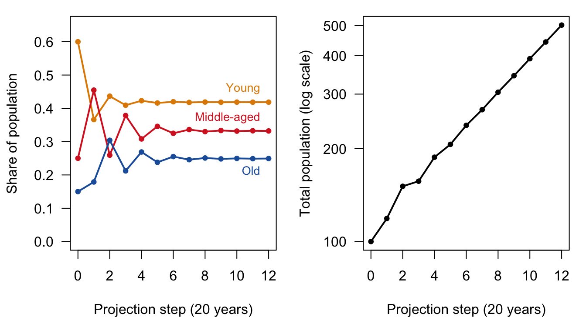
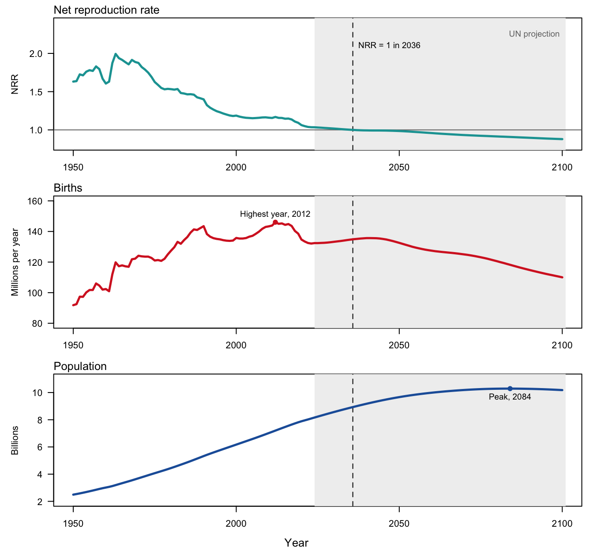
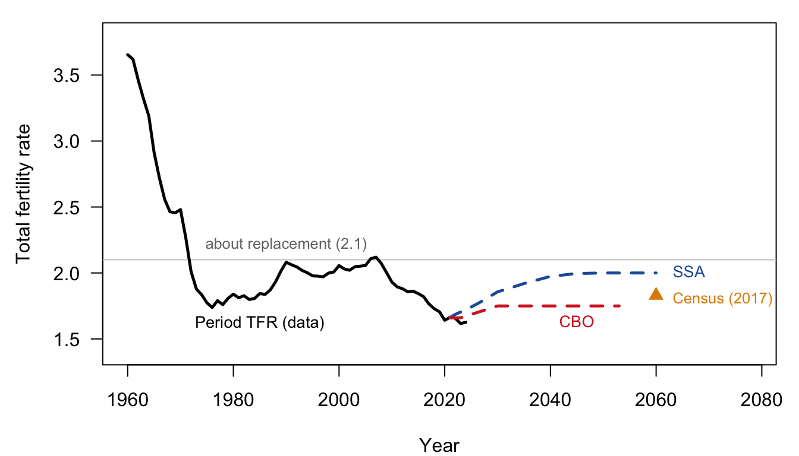
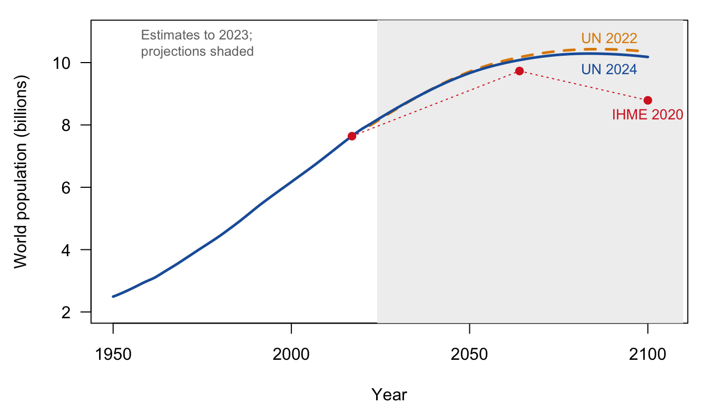

| To | From young | From middle-aged | From old |
|---|---|---|---|
| Young | ✓ | ✓ | ✓ |
| Middle-aged | ✓ | 0 | 0 |
| Old | 0 | ✓ | 0 |
17 Population Projection, Age Pyramids, and “Our Shrinking Future?”
Draft: provenance notes (for review)
Optional chapter, based on the 2023 version of this topic (the age-pyramid lecture and its in-class projection “not-a-lab”), plus the 2024 plan for the “Our Shrinking Future?” week (readings on the Census, Social Security, CBO and UN forecasts). Margin tags mark material that is not in the course slides or lab. Added · from readings comes from the forecast readings listed in the 2024 calendar (UN World Population Prospects, Vollset et al. 2020, the Census Bureau’s 2023 projections, CBO 2023, and the Social Security actuaries’ 2023 assumptions). Added · new is from outside the course materials (my framing, general knowledge, my own analysis, or Goldstein and Cassidy 2024) and needs the closest check. Untagged material follows the 2023 slides (“The Population Pyramid as History”) and the 2023 in-class projection lab. The “Our Shrinking Future?” lectures were never given as slides; only their topic list survives in the calendars, so nearly everything in the second half of the chapter is tagged.
17.1 A shrinking future?
Added · from readings UN, WPP 2024, Key messages, p. VII, and pp. 3, 16; Census Bureau press release CB23-189 (Nov. 9, 2023).
For most of the twentieth century, the population question was how to slow growth down. The newest forecasts have changed the question. In 2024 the United Nations Population Division, which has published official world population estimates and projections since 1951, put it this way:
In their own words
“The world’s population is expected to continue growing over the coming 50 or 60 years, reaching a peak of around 10.3 billion people in the mid-2080s, up from 8.2 billion in 2024. After peaking, the global population is projected to start declining gradually, falling to 10.2 billion people by the end of the century. … This represents a major change compared to projections published by the United Nations in 2013, when the estimated probability that global population growth would end during the twenty-first century was around 30 per cent.” (UN, World Population Prospects 2024, Key messages, p. VII)
The UN now puts that probability at 80 percent. China, it projects, will lose 204 million people between 2024 and 2054, and by 2100 will be back to roughly the size it was in the late 1950s. Even the United States, one of the few rich countries still expected to grow, has a peak in sight: in 2023 the Census Bureau projected that the U.S. population would reach “a high of nearly 370 million in 2080 before edging downward to 366 million in 2100.”
Where do numbers like these come from, and how much should we trust them? This chapter starts with the machinery, the projection matrix, which you can work out by hand. Then we use it to ask when a population stops growing, and finally look at the assumptions behind the official forecasts.
17.2 Pyramids in motion
A population pyramid is a snapshot. To see how age structures change, it helps to watch them move. In lecture we play the U.S. Census Bureau’s animated pyramids from its International Database for three countries:
- The United States, to see an approach to stability: the bulge of the baby boom works its way up the pyramid, and the base settles down.
- Japan, to see aging and an approach to a sub-replacement stable shape: each new cohort is smaller than the one before, and the pyramid turns upside down.
- Nigeria, to see stable exponential growth: a classic wide-based pyramid that keeps the same shape as it grows, until fertility starts to fall near the end of the animation.
Added · new The URL is the one in the slides; the tool is still online at census.gov (International Database, “Population pyramid” view).
You can play these yourself at the Census Bureau’s International Database (https://www.census.gov/data-tools/demo/idb/). Chapter 9 explains how to read a pyramid as a record of history, and why a population with fixed birth and death rates ends up with one of only three stable shapes. Here we ask a more mechanical question: if we know today’s population by age and the birth and death rates, how do we get next period’s population?
17.3 Population projection with matrices
17.3.1 Who becomes whom?
Start with a population divided into three age groups, each 20 years wide: young (0–19), middle-aged (20–39) and old (40–59). (In this toy model, no one lives past 60.) Now ask: twenty years from now, where will the members of each group be? Demographers call the people at the later date the “sequent individuals” of the people at the earlier one: each person alive in 20 years is either a survivor of someone alive today or a baby born to someone alive today.
We can draw the possible transitions as a connected graph, with an arrow from each group to the groups its members (or their babies) can end up in. The same information fits in a table, with the starting group in the columns (“from”) and the ending group in the rows (“to”):
Read down a column. People who are young today can have babies (who will be young in 20 years) and can survive into middle age. Middle-aged people can have babies and survive into old age. Old people can have babies too, in principle, but in 20 years they are dead. The zeros are structural: nobody can get younger, skip a group, or stay in the same 20-year age group for 20 years.
17.3.2 The projection matrix
Replace the check marks with numbers and we have a projection matrix, also called a Leslie matrix:
\[ A = \begin{pmatrix} F_1 & F_2 & F_3 \\ S_1 & 0 & 0 \\ 0 & S_2 & 0 \end{pmatrix}, \qquad P(0) = \begin{pmatrix} P_1 \\ P_2 \\ P_3 \end{pmatrix}. \]
- \(F_i\) is the fertility of the \(i\)th age group: the number of surviving babies in the next period per person in group \(i\) today.
- \(S_i\) is survival from the \(i\)th age group into the next one: the fraction of group \(i\) still alive 20 years later.
- \(P(0)\) is a column of the number of people in each group at time 0.
Projecting the population one step is matrix multiplication, \(P(1) = A\,P(0)\). Multiplying out shows that it does exactly what the transition table says:
\[ \begin{pmatrix} F_1 & F_2 & F_3 \\ S_1 & 0 & 0 \\ 0 & S_2 & 0 \end{pmatrix} \begin{pmatrix} P_1 \\ P_2 \\ P_3 \end{pmatrix} = \begin{pmatrix} F_1 P_1 + F_2 P_2 + F_3 P_3 \\ S_1 P_1 \\ S_2 P_2 \end{pmatrix}. \]
The top row adds up the babies born to each group. The second row is the survivors of today’s young, now middle-aged. The third row is the survivors of today’s middle-aged, now old. Everything else, including today’s old, drops out.
Added · new This example and its numbers are mine; the slides’ in-class example is left for class.
A worked example. Suppose the young have 0.3 surviving babies each over the next 20 years, the middle-aged have 0.9 and the old 0.2; 90 percent of the young survive to middle age and 85 percent of the middle-aged survive to old age. Start with 60 young, 25 middle-aged and 15 old (100 people in all). Then
\[ P(1) = \begin{pmatrix} 0.3 & 0.9 & 0.2 \\ 0.9 & 0 & 0 \\ 0 & 0.85 & 0 \end{pmatrix} \begin{pmatrix} 60 \\ 25 \\ 15 \end{pmatrix} = \begin{pmatrix} 18 + 22.5 + 3 \\ 54 \\ 21.25 \end{pmatrix} = \begin{pmatrix} 43.5 \\ 54 \\ 21.25 \end{pmatrix}. \]
The population grew from 100 to 118.75, and it got older: the share who are young fell from 60 percent to 37 percent. That is not because anyone’s behavior changed. The starting population simply had a lot of young people, who moved up into middle age. A population whose age structure is out of line with its birth and death rates changes shape as it is projected. We call it unstable.
17.3.3 Iterating: the approach to stability
What if we keep going? With a computer, we can multiply by \(A\) again and again: \(P(2) = A\,P(1)\), \(P(3) = A\,P(2)\), and so on. In R this is a for loop of one line. Figure 17.1 shows what happens with the matrix from the worked example.
Show the R code
A <- matrix(c(0.3, 0.9, 0.2,
0.9, 0, 0,
0, 0.85, 0), nrow = 3, byrow = TRUE)
n_steps <- 12
P <- matrix(NA, 3, n_steps + 1)
P[, 1] <- c(60, 25, 15)
for (i in 1:n_steps) P[, i + 1] <- A %*% P[, i]
p <- sweep(P, 2, colSums(P), "/") # proportions in each group
step <- 0:n_steps
op <- par(mfrow = c(1, 2), mar = c(4, 4.2, 1, 1), las = 1)
cols3 <- c(col_grow, col_c, col_y)
matplot(step, t(p), type = "o", pch = 19, cex = 0.6, lty = 1, lwd = 2,
col = cols3, ylim = c(0, 0.65),
xlab = "Projection step (20 years)", ylab = "Share of population")
text(12, p[, 13] + c(0.04, 0.04, -0.04), c("Young", "Middle-aged", "Old"),
col = cols3, pos = 2, cex = 0.85)
plot(step, colSums(P), log = "y", type = "o", pch = 19, cex = 0.6, lwd = 2,
xlab = "Projection step (20 years)", ylab = "Total population (log scale)")
par(op)
lambda <- Re(eigen(A)$values[1])
r_stable <- log(lambda) / 20
Two things happen, and they happen for any starting population, as long as the matrix stays the same:
- The age structure settles down. After a few steps the shares in each age group stop changing. This steady state is the stable age structure. For this matrix it is about 42 percent young, 33 percent middle-aged and 25 percent old.
- Growth becomes exponential. Once the shares are fixed, every age group, and so the total, grows by the same factor each step, here about 1.134 per 20 years, or 0.63 percent a year. On a log scale, that is a straight line.
If you start with the stable age structure, the very first step changes nothing but the size: the population is already “in line” with its rates. The slides’ in-class example shows this with two starting populations, one unstable and one stable.
Added · new The eigenvector remark is general knowledge (it is what eigen(A) computes in the 2021 lab).
For readers who know some linear algebra: the stable age structure is the leading eigenvector of \(A\), and the growth factor per step is the leading eigenvalue. But you don’t need that. Projecting forward for a while finds both.
17.3.4 What the projection teaches
The slides draw three general conclusions about age structure:
- The population growth rate largely determines the age pyramid. A growing population is young and a shrinking one is old.
- The survival curve matters, but not as much.
- Many real populations look like stable populations. And we can understand the exceptions (wars, baby booms, migration) as departures from stability.
Added · from readings UN, WPP 2024, Box 4.1, p. 34; UN, WPP 2022, Box II.2, p. 24, and Annex, p. 35.
The official forecasts work exactly this way, just with more detail. As the UN explains, the UN, the Wittgenstein Centre and the Institute for Health Metrics and Evaluation (IHME) all “use the cohort component method to project future population by age and sex. Under the cohort component method, the population by age and sex in a given year is projected forward by applying mortality, fertility and migration patterns that differ by age and sex.” Since 2022 the UN does this by single years of age and single calendar years, for 237 countries and areas, through 2100. The differences between forecasters lie almost entirely in what they assume the future rates will be, not in the arithmetic.
In the lab
In the 2023 in-class “not-a-lab,” you define a three-group projection matrix in R, project a starting population one step to check the multiplication, and then use a for loop to project ten steps. You then look at the result three ways (animated pyramids, the shares in each group, and the size of the youngest group on a log scale) and ask how you could tell when the population has become stable.
17.4 Momentum: why young populations keep growing
The projection matrix explains one of the most important facts about population forecasts. Suppose that, starting today, every woman had just enough children to replace herself and her partner. Would population growth stop?
Added · from readings UN, WPP 2022, Key messages, p. i, and pp. 8–9; UN, WPP 2024, p. 12 and pp. 20, 23.
No. A population that has been growing has a young age structure: lots of people in or about to enter their childbearing years, compared with the number of old people who will die. Even at replacement fertility, those large young cohorts have more babies than the small old cohorts leave behind in deaths, for decades. This is population momentum. The UN estimated in 2022 that “two-thirds of the projected increase in global population through 2050 will be driven by the momentum of past growth that is embedded in the youthful age structure of the current population. Such growth would occur even if childbearing in today’s high-fertility countries were to fall immediately to around two births per woman.” The 2024 revision raised the share to 79 percent, about 1.4 billion people.
Momentum works in reverse, too. After decades of low fertility, the number of women of childbearing age shrinks, and births keep falling even if fertility recovers. The UN calls this negative momentum, and in 2024 found it was “likely to be the main driver of population decline in 18 countries and areas between now and 2054.” For the countries whose populations have already peaked, “even if fertility were to return instantly to the replacement level and stay there for several decades, the population of the group would start to decline after 2040.”
17.4.1 Try it: the momentum app
Added · new This app (momentum) is from Goldstein’s Shiny sandbox (research_to_file/sandbox_from_oldlaptop/shiny/momentum, 2024); it is not in any C175 lab or slide. I copied ui.R and server.R into course_apps_extra/momentum (leaving out an unrelated test file in the same folder) and exported it with Shinylive. Headless Chrome hung on the live app, so the image is the app’s own plot drawn with its own code at the default settings with the time slider at its end (T = 20), not a screenshot. The questions are mine.
The app projects a five-age-group population with a Leslie matrix you control. It starts the population in the stable state for your matrix, then, at time 0, cuts fertility instantly to exactly replacement (it rescales the first row so the net reproduction rate is 1) and projects 20 steps. Press play on the time slider, or drag it, to watch births, total population and the age distribution respond. It opens in a new tab. (The first load can take a few seconds while R starts up in your browser.)
Open the momentum app in a new tab ↗
Before you move each slider, write down what you expect to happen. Then check.
- How much more growth? At the default settings the net reproduction rate falls from about 1.56 to exactly 1 at time 0. Before pressing play, guess the ratio of the final population to the population at time 0. Is it bigger or smaller than you expected, and which age groups account for the growth?
- Faster growth, more momentum? Raise
firstrow[1]andfirstrow[2]from 0.8 to 1.2, so the population was growing faster before time 0. Predict whether the final “Pop ratio” will be larger or smaller than before. Why? - Births versus population. In the default run, the number of births barely changes after time 0, but the total population keeps rising for several steps. Explain how both can be true at once.
17.5 When will population peak?
17.5.1 The puzzle of the long lag
Added · new The framing and the Japan example follow Goldstein and Cassidy (2024), Demography, pp. 419–423, which is not on the reading list. The lecture topic is from the calendar (“time paths of world fertility and the timing of peak population”).
Japan’s fertility fell below replacement in the early 1970s. Its population did not start to shrink until about 2009, some 35 years later. Italy, South Korea and China show similar lags (Table 17.2). Why does it take so long for low fertility to show up as decline? And can we use the answer to predict when the world as a whole will peak?
| Country | NRR falls below 1 | Population peaks | Lag, NRR = 1 to peak (years) |
|---|---|---|---|
| Japan | 1973 | 2009 | 36 |
| Italy | 1975 | 2014 | 39 |
| South Korea | 1983 | 2020 | 37 |
| China | 1990 | 2021 | 31 |
| India | 2017 | 2061 (projected) | 44 |
| World | 2036 (projected) | 2084 (projected) | 48 |
Added · new The net reproduction rate (NRR) is the number of daughters a woman would have, counting the chance she dies before or during her childbearing years. NRR = 1 is exact replacement. It is used here instead of the TFR because replacement TFR differs across countries (it is near 2.1 only where mortality is low).
Added · new The Coale results and the extensions are from Goldstein and Cassidy (2024), pp. 421–425. The numbers are theirs (typical \(\mu \approx 30\), \(A \approx 40\)). Josh’s peak-population app (below) lets you check them.
17.5.2 Coale’s answer
The demographer Ansley Coale worked out what happens in a simple case: a closed population with constant mortality whose fertility falls steadily, by the same percentage every year. Two results come out of the projection arithmetic.
Births peak before fertility reaches replacement. This is surprising. You might think the momentum of past growth would keep births rising even after fertility hits replacement. But think about what replacement means: each generation exactly replaces the one before it. So at the moment fertility reaches replacement, this year’s births are about equal to births one generation (about 30 years) earlier. If births a generation apart are equal, and births rose and then fell in between, the peak must lie between them. In Coale’s scenario births peak about half a generation, roughly 15 years, before fertility reaches replacement.
Population peaks when the biggest birth cohort reaches the average age of the population. Total population is the sum of all past birth cohorts that are still alive. Roughly speaking, it keeps growing until the largest cohort has aged to the middle of the population, about 40 years. So population peaks about 40 years after births do, or about \(40 - 15 = 25\) years after fertility reaches replacement.
In symbols, with \(t_0\) the date the NRR reaches 1, \(\mu\) the average age of childbearing and \(A\) the average age of the population,
\[ t_{\text{births peak}} \approx t_0 - \frac{\mu}{2}, \qquad t_{\text{population peaks}} \approx t_0 - \frac{\mu}{2} + A. \]
17.5.3 Why real populations take even longer
Twenty-five years is too short. In Table 17.2, the lags are 30 to 40 years and more. Joshua Goldstein and Thomas Cassidy (2024) show that the extra years come from three features of real demographic change that Coale left out:
- Rising longevity. If people keep living longer, the population keeps getting a bit bigger even after births start to fall. With life expectancy rising about 1.6 years per decade, the peak comes several years later.
- Fertility decline slows down below replacement. Real fertility doesn’t fall at a steady rate forever; it levels off. A leveling-off makes the population take longer to turn down.
- Immigration adds to the population and to births.
With these extensions, their models “predict a typical lag between replacement-level fertility and population decline of about 35 to 40 years, consistent with projections by the United Nations and about 15 years longer than the lag predicted by Coale.”
Figure 17.2 applies this to the world as a whole, using the UN’s 2024 projection.
Show the R code
w <- wpp_get("World")
t0w <- t0_of(w)
tB <- w$Time[which.max(w$Births)]
tN <- w$Time[which.max(w$Pop)]
op <- par(mfrow = c(3, 1), mar = c(2.5, 4.8, 1.6, 1), las = 1, oma = c(1.5, 0, 0, 0))
shade <- function() rect(2024, -1e9, 2101, 1e9, col = "grey94", border = NA)
plot(w$Time, w$NRR, type = "n", ylim = c(0.8, 2.4), xlab = "", ylab = "NRR")
shade(); abline(h = 1, col = col_grey); abline(v = t0w, lty = 2)
lines(w$Time, w$NRR, lwd = 2.5, col = col_nrr)
text(2101, 2.25, "UN projection", pos = 2, cex = 0.9, col = col_grey)
text(t0w, 2.1, paste0("NRR = 1 in ", round(t0w)), pos = 4, cex = 0.9)
mtext("Net reproduction rate", side = 3, line = 0.2, adj = 0, cex = 0.8)
plot(w$Time, w$Births / 1000, type = "n", ylim = c(80, 160),
xlab = "", ylab = "Millions per year")
shade(); abline(v = t0w, lty = 2)
lines(w$Time, w$Births / 1000, lwd = 2.5, col = col_c)
points(tB, max(w$Births) / 1000, pch = 19, col = col_c)
text(tB, max(w$Births) / 1000, paste("Highest year,", tB), pos = 3, cex = 0.9)
mtext("Births", side = 3, line = 0.2, adj = 0, cex = 0.8)
plot(w$Time, w$Pop / 1e6, type = "n", ylim = c(2, 11),
xlab = "", ylab = "Billions")
shade(); abline(v = t0w, lty = 2)
lines(w$Time, w$Pop / 1e6, lwd = 2.5, col = col_y)
points(tN, max(w$Pop) / 1e6, pch = 19, col = col_y)
text(tN, max(w$Pop) / 1e6, paste("Peak,", tN), pos = 1, cex = 0.9)
mtext("Population", side = 3, line = 0.2, adj = 0, cex = 0.8)
mtext("Year", side = 1, outer = TRUE, line = 0.3, cex = 0.8)
par(op)
Added · new My reading of the UN data. World births are fairly flat from the late 1980s on (the UN notes they “remained stable at around 140 million since the late 1980s,” WPP 2022, p. 13), so the exact year of the birth peak is not well defined.
The world fits the pattern, with a twist. In the UN’s projection, the world NRR reaches replacement in the mid-2030s and population peaks in the mid-2080s, a lag of almost 50 years. Births have stayed between about 130 and 145 million a year since the late 1980s, so in the data the birth “peak” is less a peak than the top of a long, flat hill. Part of the extra lag reflects the features above: the UN assumes life expectancy keeps rising and fertility levels off just below replacement. Part reflects the fact that the world is a mix of countries at very different stages, so it is not one smooth Coale-style decline.
17.5.4 Try it: the peak-population app
Added · new This is the app Josh built for Goldstein and Cassidy (2024) (research/peak-population-shiny, June 2026 version). It needs functions and data from his peakpop package, so I added a global.R that copies the package’s projection, rescaling, analytic and plotting functions and the bundled WPP 2024 world schedules (world_wpp2024_Fx_Lx.csv). Exported with Shinylive to apps/peak_pop. The image is the app’s own plot, drawn with its code at the default settings with the time slider moved to 50 (it starts at −50, with almost nothing drawn); headless Chrome hung on the live app. The app’s sidebar lists its own six exercises; my questions overlap with its first, third and fourth.
The app projects a population, using the world’s 2024 age schedules, in which the NRR falls by a fixed percentage \(k\) each year (the Coale scenario), crossing replacement at time 0. You can also make life expectancy rise at rate \(\rho\), add “extra curvature” so that fertility decline slows down, and show the formulas’ predicted peaks next to the exact projection. A second tab lets you draw your own NRR path. Press play on the time slider to run the projection. It opens in a new tab.
Open the peak-population app in a new tab ↗
Before you change each setting, write down what you expect to happen. Then check.
- Does the speed of decline matter? At \(k = -1.5\%\), births peak about 14 years before replacement and population about 26 years after. Predict what happens to each peak if fertility falls faster (\(k = -2\%\)) or more slowly (\(k = -1\%\)). Then try it.
- Longer lives. Set \(\rho\) to 0.2% (life expectancy rising about 1.5 years per decade). Which peak moves, births or population, and by roughly how much? Does the answer depend on \(k\)?
- A stall. On the “Custom NRR” tab, make fertility level off before it reaches replacement (raise the anchors at \(t = -30\) and \(t = -15\) to about 1.1). Before you look, predict whether the population peak comes earlier or later than Coale’s formula says.
17.6 The ingredients of a forecast
Every projection needs three sets of assumptions: future fertility, future mortality and future migration. The “Our Shrinking Future?” lectures planned one topic for each.
17.6.1 Fertility: the postponement transition and period fertility
Added · from readings SSA 2023, Fertility, pp. 2–5 and Table 1.1; CBO 2023, p. 3.
The total fertility rate in a given year is a period measure: it adds up that year’s birth rates at every age, as if one woman lived through all of them. The Social Security actuaries explain the distinction with another measure, completed cohort fertility:
In their own words
“The period TFR speaks to the birth rates of women at various ages in a given calendar year and is strongly influenced by economic and other factors affecting birth rates during that year. The completed cohort TFR answers the question: ‘how many children will women born in a given year have over their lifetime?’” (SSA, Long-Range Demographic Assumptions for the 2023 Trustees Report, Fertility, p. 2)
The two can tell different stories when the timing of births changes. If women in their twenties start postponing births to their thirties, then for a while fewer births happen each year, and the period TFR falls, even if each woman eventually has just as many children. Demographers call this a tempo effect: “a temporary drop in the TFR due to a delay in childbearing to older ages.” When the postponement stops, the period TFR bounces back. The long shift toward later childbearing in rich countries is sometimes called the postponement transition.
Added · new The 2023 and 2024 values are from the World Bank (the file is data/us_tfr_worldbank_1960_2024.csv, used in ch. 7). The assumptions are from SSA 2023 (Table 1.1; the 2.0 ultimate is reached in 2056), CBO 2023 (p. 3) and, for the Census Bureau’s 2017 projections, as reported by SSA 2023 (Fertility, p. 4).
Tempo matters a great deal for U.S. forecasts. The U.S. period TFR fell from 2.12 in 2007 to 1.64 in 2020, a record low. Is that a temporary postponement, or a lasting drop in family size? The forecasters disagree (Figure 17.3):
- Social Security’s actuaries assume the TFR will climb back to 2.0 by 2056, “consistent with an ultimate completed cohort fertility rate of 2.0.” Their reasons: women’s reported birth expectations remain “well above 2.00,” which “strongly suggests that the current reduction in the TFR will not be permanent,” and “the cultural and economic climate in the U.S. makes it highly unlikely that our TFR will remain below a level of 1.7 for any sustained period.”
- The CBO assumes the TFR rises from 1.66 to 1.75 by 2030 and stays there, as birth rates for women 30 to 49 rise while those for younger women fall, “consistent with the trends of delayed childbearing and rising average age of mothers.”
- The Census Bureau’s 2017 projections held the TFR almost constant, at 1.83 in 2060.
Show the R code
ssa <- data.frame(year = c(2021:2032, 2035, 2040, 2045, 2050, 2055, 2060),
tfr = c(1.663, 1.686, 1.704, 1.723, 1.742, 1.763, 1.785, 1.808,
1.833, 1.857, 1.869, 1.881, 1.920, 1.974, 1.996, 2.000,
2.000, 2.000))
cbo <- data.frame(year = c(2021, 2023, 2030, 2053), tfr = c(1.66, 1.66, 1.75, 1.75))
op <- par(mar = c(4, 4.5, 1, 1), las = 1)
plot(us_tfr$year, us_tfr$tfr, type = "n", xlim = c(1960, 2078), ylim = c(1.4, 3.8),
xlab = "Year", ylab = "Total fertility rate")
abline(h = 2.1, col = "grey80")
text(1990, 2.1, "about replacement (2.1)", pos = 3, cex = 0.8, col = col_grey)
lines(us_tfr$year, us_tfr$tfr, lwd = 2.5)
lines(ssa$year, ssa$tfr, lwd = 2.5, lty = 2, col = col_y)
lines(cbo$year, cbo$tfr, lwd = 2.5, lty = 2, col = col_c)
points(2060, 1.83, pch = 17, col = col_grow, cex = 1.3)
text(2061, 2.0, "SSA", col = col_y, pos = 4, cex = 0.85)
text(2045, 1.75, "CBO", col = col_c, pos = 1, cex = 0.85)
text(2061, 1.80, "Census (2017)", col = col_grow, pos = 4, cex = 0.8)
text(1985, 1.62, "Period TFR (data)", cex = 0.85)
par(op)
The most recent data have not been kind to the rebound story: the World Bank series puts the U.S. TFR at about 1.62 in 2023 and 1.63 in 2024, below the SSA path.
Added · from readings Vollset et al. 2020, pp. 1286–1288 and 1301; UN, WPP 2022, Box III.1, p. 33; UN, WPP 2024, Box 2.1, p. 19.
The same question, multiplied across the world, is the biggest source of disagreement among global forecasters. The UN assumes that in low-fertility countries fertility will rebound somewhat, an assumption “informed by trends from 39 countries that have experienced declines in total fertility below 2 children per woman, followed by a subsequent rebound,” and “consistent with an expectation of continued progress towards gender equality and women’s empowerment.” The IHME team led by Stein Emil Vollset, writing in The Lancet in 2020, criticized this. They modeled completed cohort fertility instead of the period TFR, precisely because cohort fertility is “much less affected by the delay of childbearing that occurs as females become more educated, which leads the period measure of the TFR to initially decline to low levels and then increase.” Between 1965 and 2017, in countries with below-replacement fertility, the period TFR rose in 29.4 percent of country-years, but completed cohort fertility in only 13.9 percent. Their conclusion is blunt:
In their own words
“Perhaps the most important determinant of world population in our 2100 forecasts was the rate of fertility that countries moved towards once they reached a rate lower than the replacement level of 2·1. Even differences in the post-transition TFR as small as 0·1 births per female for populations with a rate already lower than replacement level translated into 528 million (95% UI 421–573) more people on the planet in 2100.” (Vollset et al. 2020, p. 1301)
17.6.2 Mortality: the future of longevity
Added · from readings SSA 2023, Mortality, pp. 3–7 and 11–13; CBO 2023, p. 4; UN, WPP 2024, Key messages, p. VIII.
How long will people live? The Social Security actuaries call mortality the assumption “subject to uncertainty that is possibly greater than any other variable used in the Trustees’ assumptions.” They describe the debate this way: “Some demographers argue that life expectancy is potentially limitless and that rates of mortality reduction will match or exceed historical trends indefinitely into the future. Others believe that biological limitations make mortality improvement more difficult to achieve in the future.”
On one side, the actuaries cite the argument by Jim Oeppen and James Vaupel (2002) that life expectancy in the “best nation” has risen in a straight line and will keep doing so. On the other, they note that the oldest verified human lived to 122, a record that “shows no signs of extending significantly,” and that the big sources of past progress (antibiotics, clean water, access to primary care, the spread of Medicare and Medicaid) will contribute less in the future. U.S. history shows how uneven progress has been. Death rates at ages 65 and over fell 1.79 percent a year from 1999 to 2009 but only 0.63 percent a year from 2009 to 2019. In its intermediate scenario, Social Security assumes death rates at ages 65 and over will fall about 0.67 percent a year from 2019 to 2097, a bit slower than the 0.78 percent average for 1900–2019.
The CBO projects U.S. life expectancy at birth to rise from 77.8 years in 2023 to 82.3 in 2053. It also notes that for Americans aged 15 to 44, death rates have recently risen, “driven primarily by deaths from suicide and drug overdoses (particularly opioids).” Globally, the UN projects life expectancy rising from 73.3 years in 2024 to about 77.4 in 2054, and by the late 2050s more than half of all deaths will occur at age 80 or older.
For the timing of the peak, longevity is a brake on decline. In the countries whose populations have already peaked, the UN notes that falling mortality is “the only demographic component projected to contribute positively to population change,” but it “will compensate for only one third of the negative effect of fertility.”
17.6.3 Migration and the future population of the United States
Added · from readings Census Bureau press release CB23-189 (2023); CBO 2023, p. 1; UN, WPP 2024, pp. 23, 43; Vollset et al. 2020, pp. 1302–1303.
For a single country, migration can matter as much as fertility. The Census Bureau’s 2023 projections make the point with four scenarios that differ only in immigration (Table 17.3).
| Scenario | Peak | Population in 2100 | Deaths exceed births from | Share 65+ in 2100 |
|---|---|---|---|---|
| Main (middle) series | about 370 million in 2080 | 366 million | 2038 | 29.1% |
| High immigration | no peak before 2100 | 435 million | 2042 | 27.4% |
| Low immigration | about 346 million in 2043 | 319 million | 2036 | — |
| Zero immigration (illustrative) | declines from 2024 | 226 million | 2033 | 35.6% |
Added · new The 333 million figure for 2022 is my inference from the release (226 million in 2100 is “roughly 107 million lower than the 2022 estimate”). The release does not give the share 65+ for the low-immigration scenario.
Different levels of immigration, the Census Bureau notes, “could change the projection of the population in that year by as much as 209 million people.” In every scenario, the country gets older: in the main series, people 65 and over outnumber children under 18 from 2029 on.
The CBO tells the same story over a shorter horizon. It projects the population (measured as the “Social Security area population”) growing from 336 million in 2023 to 373 million in 2053, just 0.3 percent a year, “about one-third the pace experienced from 1983 to 2022.” Immigration accounts for about three-quarters of growth in the first decade, and, as deaths come to exceed births, “accounts for all population growth beginning in 2042.” The UN reaches a similar verdict: without immigration, “the population of the United States of America would likely peak already in the mid-2030s instead of continuing to grow until the end of the century.”
Added · new Josh’s calendar note for this lecture asks about “demographic drivers (Mexico?),” i.e., falling fertility in sending countries. None of the readings discusses it, so I have not written it up.
Could immigration rescue the countries that are shrinking? The UN thinks not, in the long run: “International migration alone, however, cannot offset population decline or population ageing in the long term and should not be seen as a ‘solution’ to what is ultimately a universal and irreversible process: the demographic transition.” Vollset and coauthors are more enthusiastic, calling “liberal immigration with effective assimilation” the “optimal strategy for economic growth, fiscal stability, and geopolitical security” for rich, low-fertility countries, while noting that the supply of migrants may shrink as sending countries develop.
17.7 Comparing the forecasters
Added · from readings UN, WPP 2022, Key messages and pp. 27–31; UN, WPP 2024, Key messages, pp. 3, 34; Vollset et al. 2020, pp. 1285 and 1297.
The world forecasts agree closely until about 2050. After that they diverge, mainly because of what they assume about fertility (Figure 17.4).
- UN, 2022: 9.7 billion in 2050 and 10.4 billion in 2100, with a peak “during the 2080s” and about a 50 percent chance the peak comes before 2100.
- UN, 2024: a peak of about 10.3 billion in the mid-2080s and 10.2 billion in 2100, with an 80 percent chance of a peak this century. The revision is “due to several factors including lower-than-expected levels of fertility in recent years in some of the world’s largest countries, particularly China.”
- IHME (Vollset et al. 2020): a peak of 9.73 billion in 2064, falling to 8.79 billion in 2100, with global TFR at 1.66 in 2100. India, Nigeria, China, the USA and Pakistan would be the five largest countries, and 23 countries, including Japan, Thailand and Spain, would shrink by more than half.
- Wittgenstein Centre (2023): 9.9 billion in 2100, now close to the UN.
Show the R code
w22 <- wpp_get("World", 2022); w24 <- wpp_get("World", 2024)
op <- par(mar = c(4, 4.5, 1, 1), las = 1)
plot(w24$Time, w24$Pop / 1e6, type = "n", xlim = c(1950, 2105), ylim = c(2, 11),
xlab = "Year", ylab = "World population (billions)")
rect(2024, 0, 2110, 12, col = "grey94", border = NA)
lines(w22$Time[w22$Time >= 2022], w22$Pop[w22$Time >= 2022] / 1e6,
lwd = 2.5, lty = 2, col = col_grow)
lines(w24$Time, w24$Pop / 1e6, lwd = 2.5, col = col_y)
ihme <- data.frame(year = c(2017, 2064, 2100), pop = c(7.64, 9.73, 8.79))
lines(ihme$year, ihme$pop, lty = 3, col = col_c)
points(ihme$year, ihme$pop, pch = 19, col = col_c)
text(2100, 10.75, "UN 2022", col = col_grow, pos = 2, cex = 0.85)
text(2100, 9.75, "UN 2024", col = col_y, pos = 2, cex = 0.85)
text(2100, 8.79, "IHME 2020", col = col_c, pos = 1, cex = 0.85)
text(1955, 10.5, "Estimates to 2023;\nprojections shaded", pos = 4, cex = 0.8,
col = col_grey)
par(op)
Added · from readings UN, WPP 2022, pp. 3, 31; Vollset et al. 2020, p. 1287.
The disagreement is partly about methods. The UN projects each country’s fertility from its own history and the experience of other countries, with time as the only driver; the IHME models fertility as a function of women’s education and access to contraception, so its forecasts build in the expectation that faster schooling means faster fertility decline. Each side has criticized the other. Vollset and coauthors call the UN’s models “sophisticated curve-fitting exercises,” while the UN notes that “independent reviews have suggested that the IHME projections may overstate the likely pace of fertility decline.”
Two lessons follow. First, the near future is fairly certain. As the UN puts it, “the size of the world population in the near future is relatively certain because the size and age structure of the population over the next few decades are largely the result of demographic processes that have already taken place in the recent past. In particular, most of the women whose offspring will contribute to the population growth through 2050 are already alive.” That is the projection matrix at work. Second, the long-run future depends on a few numbers we do not know, above all the level at which fertility settles once it falls below replacement.
17.8 Key ideas
- A projection matrix (Leslie matrix) moves a population forward one step: the first row adds up babies born to each age group, and the subdiagonal moves survivors up one group. Projection is matrix multiplication, \(P(t+1) = A\,P(t)\).
- With constant rates, any starting population converges to a stable age structure and grows exponentially. The growth rate largely determines the shape of the pyramid; survival matters less.
- Momentum: a young population keeps growing for decades after fertility falls to replacement, and an old one keeps shrinking after fertility recovers.
- In a steady fertility decline (the Coale scenario), births peak about half a generation before replacement and population peaks about 25 years after. Rising longevity and leveling fertility stretch the lag to 35–40 years.
- The period TFR can fall temporarily when births are postponed (a tempo effect). Whether recent low fertility is postponement or lasting decline is the key unknown in U.S. and world forecasts.
- Official forecasts use the same cohort-component arithmetic; they differ in their assumptions about fertility, longevity and migration. For the United States, immigration decides whether and when the population peaks.
17.9 Check your understanding
Added · new All questions are new. None reuses the slides’ in-class matrix examples, the Peru practice problem, or the 2021 lab’s self-study exercise.
One step by hand. A population has 40 young, 40 middle-aged and 20 old, with \(F = (0.2, 0.8, 0.1)\), \(S_1 = 0.95\) and \(S_2 = 0.9\). Compute the population one step later. Did it get younger or older? Did it grow?
Structural zeros. Suppose we use 10-year age groups but still project 20 years at a time. Why would the simple projection matrix no longer work? (Hint: think about who becomes whom.)
Predict, then check. Before computing anything, predict whether the stable age structure of the worked example would be older or younger if \(F_2\) fell from 0.9 to 0.6. Explain using the conclusion that “the growth rate largely determines the age pyramid.”
Momentum in words. The UN says two-thirds of the world’s population growth to 2050 would happen even if fertility fell immediately to replacement. Explain to a friend, without using matrices, why.
Births before replacement. Explain why, if fertility falls steadily, births must peak before the NRR reaches 1. Use the idea that at replacement, births equal births one generation earlier.
Reading Table 17.2. Japan’s population peaked about 35 years after its NRR fell below 1. What is Coale’s prediction for the lag? Name two reasons the actual lag was longer.
Tempo. Suppose every American woman decided to have her children two years later than women do now, but the same number of them. What would happen to the period TFR during the years of the shift, and afterward? What would happen to completed cohort fertility?
Whose assumption? Social Security assumes an ultimate U.S. TFR of 2.0 and the CBO 1.75. Which assumption makes Social Security’s finances look better in the long run, and why? (Use the old-age dependency ratio from Chapter 8.)
17.10 Further reading
- United Nations, Department of Economic and Social Affairs, Population Division. 2022. World Population Prospects 2022: Summary of Results. Key messages and Part III (pp. 27–34). As you read: How much of the growth to 2050 is momentum? Why does the UN think its own high- and low-fertility scenarios are “implausibly large” for the world as a whole?
- United Nations. 2024. World Population Prospects 2024: Summary of Results. Key messages and Chapters I–II (pp. VII–XI, 3–23). As you read: What share of the world lives in countries that have already peaked? What does “negative momentum” mean for policies to raise fertility?
- Vollset, Stein Emil, et al. 2020. “Fertility, mortality, migration, and population scenarios for 195 countries and territories from 2017 to 2100: a forecasting analysis for the Global Burden of Disease Study.” The Lancet 396: 1285–1306. As you read: Why do the authors model completed cohort fertility instead of the TFR? Which single assumption matters most for their 2100 forecast?
- U.S. Census Bureau. 2023. “U.S. Population Projected to Begin Declining in Second Half of Century.” Press release CB23-189, November 9. Short. As you read: How much difference does immigration make to the U.S. population in 2100?
- Congressional Budget Office. 2023. The Demographic Outlook: 2023 to 2053. As you read: When do deaths exceed births in CBO’s projections? Why does CBO expect fertility to rise among women 30 to 49?
- Social Security Administration, Office of the Chief Actuary. 2023. The Long-Range Demographic Assumptions for the 2023 Trustees Report. Fertility (pp. 1–6) and Mortality (pp. 1–13). As you read: What is the difference between period and cohort fertility? Why do the actuaries think U.S. fertility will return to 2.0?
- Goldstein, Joshua R., and Thomas Cassidy. 2024. “The Formal Demography of Peak Population.” Demography 61(2): 419–438. Not on the course reading list; mathematical. As you read: Why do births peak before replacement? Which extensions add the most years to the lag?